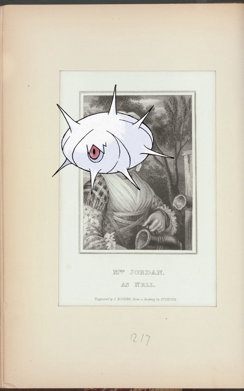
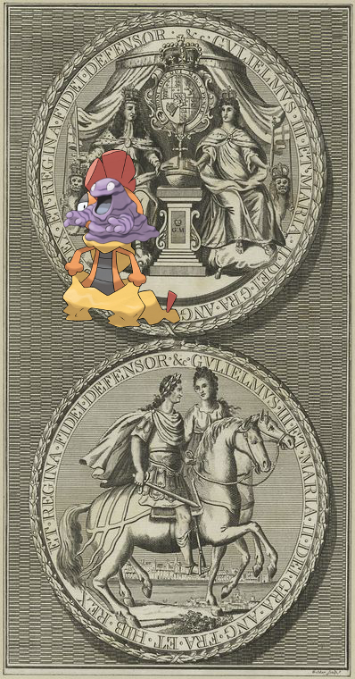

-
Stunfisk, Mesprit + When Reuben comes to town
-
Silcoon | Mrs. [Dorothy] Jordan as Nell.
-
Ducklett, Kingdra | John Jacob Astor.
-
, Hydreigon – Commerce Street, no. 39-41, Manhattan..
-
 Electivire | Lilas.
Electivire | Lilas. -
Barboach, Pidgeot – Waldorf Astoria!
-
Chingling ; Document!
-
Meganium ; Wall of the Castle of Antonia, Jerusalem!
-
Swampert on Hull, William. West Point. To General H. Jackson.
-
Snorlax @ Letter to F. Barbé de Marbois!
-
Empoleon on [John Cruger.]!
-
Gallade @ Abydos. Temple de Séti. Corridor X.
-
Shinx @ U.S.M.S. "Philadelphia," breakfast.!
-

-
Reuniclus, Flabebe, Gengar on Levaia polovina karty Pol'shi A.Pograbiusa 1569g. Str.15.
-
, Scizor | Livingston mansion..
-
Scrafty, Grimer | Seal of William and Mary..
-
Pancham, Venusaur ; [Alcott, Amos Bronson], ALS to. Aug. 1, 1837.
-
 Simisage @ Denderah. Grand temple. Chambre V.!
Simisage @ Denderah. Grand temple. Chambre V.! -
Camerupt on [James Jackson]!
-
Mr-Mime – Feld-Gendarme zu Fuss und zu Pferd 1850-1861!